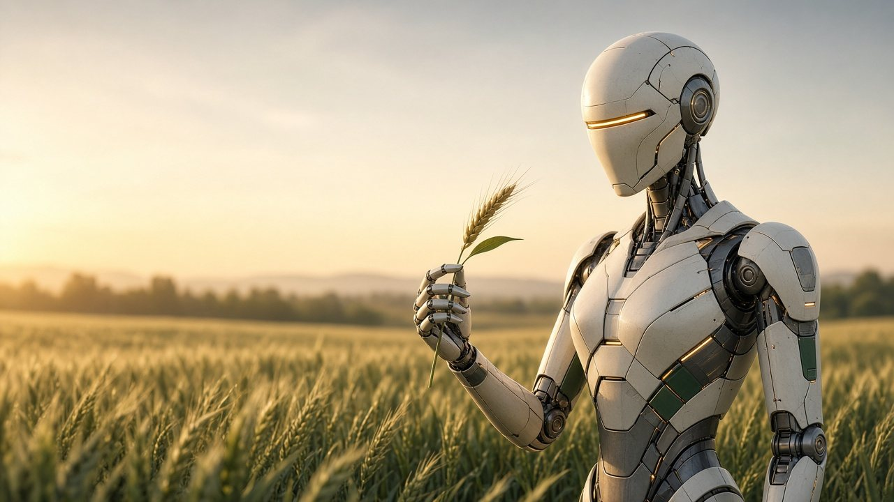
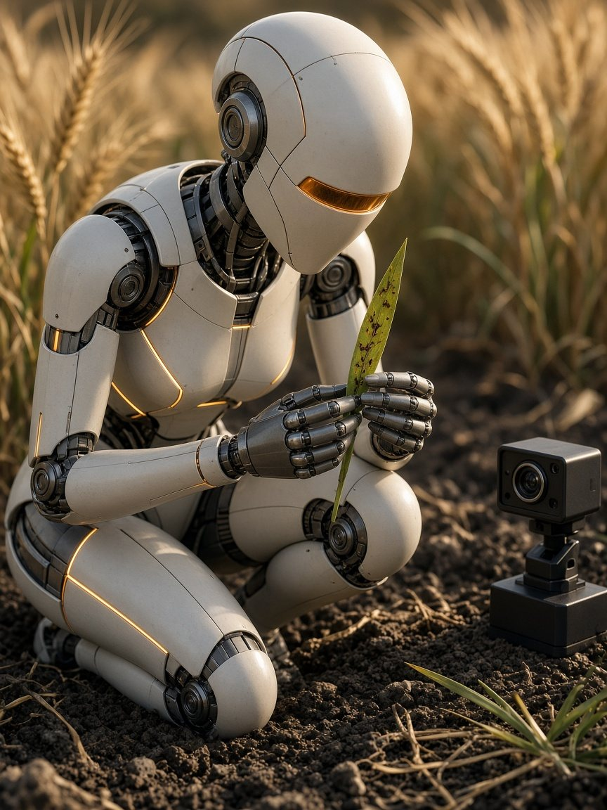

QUERRA · Gepiu, Bihor · NOSTRADAMUS Open Call #1
One perception core.
A whole growing season.
An operator-guided scouting and evidence unit for cereal fields. RGB photographs, GPU inference on an NVIDIA Jetson Orin Nano Super, uncertainty on every result, human review, traceable exports. Agriculture first.
- Works todayTensorRT inference on the Jetson GPU
- TRL 4 · labTarget · not yet declared
- Programme targetTRL 7 · portable or cart-mounted
Vision render AI-generated concept art. No humanoid is built or planned in the funded project; humanoid and manipulation research is a 2029–2031 window beyond TRL7.

Long-range vision · beyond TRL7
The same eyes, someday with hands.
The perception core is the part we are building now. The humanoid is where the idea could lead: a field assistant that looks closely at a leaf, records what it sees and hands the decision to a person.
- Now → 2027Portable or cart-mounted unit · TRL4 target, then TRL5–7 in the funded sprints
- 2027–2028The field unit as a payload on an existing tramline carrier, supervised on site
- 2028–2029Aerial surveys flag patches; the carrier photographs them for review
- 2029–2031Manipulation and humanoid research, only where task value, reliability, safety and economics justify it
Indicative planning windows, not achieved or committed milestones. A robot, drone fleet or humanoid is not a prerequisite for the 12-month project.